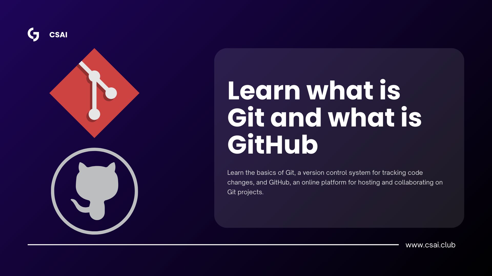

DIY Learning
Explore the skills we use in our projects and see how they connect to the evolving world of AI.

Machine Learning Tutorials
Learn the fundementals of machine learning from a Princton grad student.

CV Robotics: Virtual to Real-World Learning
Technologies: Blender, Mujoco Physics Sim, Jupyter, Python
This project aims to strengthen the connection between Machine Learning and Robotics by training robots to manipulate and successfully complete real-world tasks involving articulating objects.
By leveraging virtual environments, we can efficiently simulate interactions, create and collect large 3D datasets, and log data simultaneously during training.
This approach not only accelerates the development process but also reduces costs by minimizing risks to physical robots and expensive appliances.
Ultimately, the project seeks to enable robots to learn complex, practical tasks in a safe, scalable, and cost-effective manner.

CSAI Website
Technologies: HTML, CSS, JavaScript
The CSAI website is an interactive and user-friendly platform built using HTML, CSS, and JavaScript, designed to showcase the club’s activities, projects, and resources.
It features a clean and modern layout, intuitive navigation, and dynamic content that highlights ongoing initiatives, upcoming events, and member contributions.
Through interactive elements and responsive design, the website provides a seamless experience for visitors, encouraging engagement with the club and fostering a community passionate about computer science and artificial intelligence.

AnatomyVR
Technologies: Blender, Hyperskill, Unity
This project is a virtual 3D simulation platform focused on human muscles, designed for anatomy and physical therapy students.
It provides detailed, interactive 3D models that allow students to explore, identify, and understand the structure and function of each muscle.
By engaging with the simulation, students can visualize muscle groups, learn their roles in movement, and practice applying this knowledge in a virtual setting, enhancing their learning experience beyond traditional textbooks and lectures.
This platform combines technology and education to offer a hands-on, immersive, and accessible way to master muscular anatomy and its applications in physical therapy.